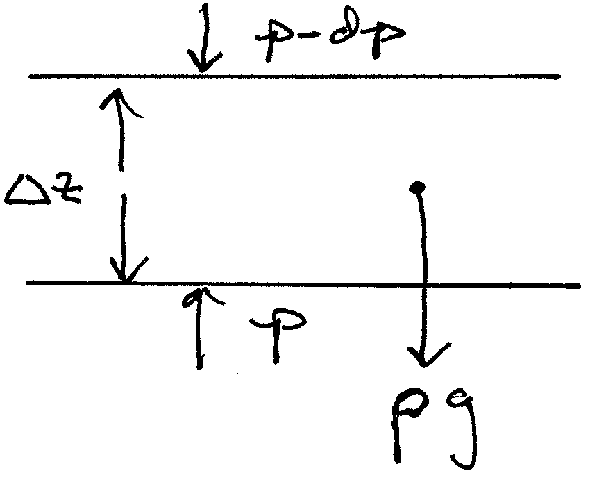

Week1: Hydrostatic balance explainer#
This note goes into more detail on the idea of hydrostatic balance, which is introduced in Stull Chapter 1, p. 16 eq. 1.25b or Thompkins p. 10 eq. 1.29.
One major simplification for atmospheric thermodyamics is the fact that on timescales lareger than 30 minute or so the environment is in hydrostatic balance, which is the statement that the vertical pressure differential across a layer provides exactly the amount of force necessary to balance gravity, so the atmosphere is not rising or sinking:
{kind=link}

Fig. 5 Hydrostatic balance for a 1 \(m^2\) cross section of a layer#
In symbols, the balance shown by Fig. 5 implies that:
Question: is this the same pressure p as the local pressure given by the equation of state: \(p=\rho R_d T\)?
Scale Heights#
On page 10 equation 1.30 Thompkins integrates the hydrostatic equation to get the pressure as a function of height, assuming that temperature is constant with height. That’s not a great assumption. Here’s how to do a better job by defining a height-averaged temperature that gives the exact answer. We want to find the pressure scale height \(H_p\) such that:
In words – \(H_p\) gives the height at which gravity wins out over the kinetic energy of the air molecules – warmer atmospheres take longer to decrease their pressure by a factor of \(\exp(-H_p/H_p) = \exp(-1)\) (the e-folding height) because the air molecules have more energy to travel higher.
Do pressure first: Rewrite (10) using the ideal gas law:
(11)#\[ dp = - \rho g dz = - \frac{p}{R_d T} g dz = \frac{p}{H_p} \]where \(H_p=R_d T/g\) is the pressure scale height.
\[ d\ln p = - \frac{dz }{H_p} \]\[ \int_{p_0}^{p}\!\,d \ln p = - \int_{0 }^{z}\!\frac{1}{H_p} dz^\prime \]Since temperature (and gravity) are changing with height, we need to know profiles of g(z) and T(z) to go any further. If we don’t have those profiles, then a useful approximation is to define a vertically averaged \(H_p\), since the average involves a large mass of air (about 10 metric tons/cubic meter), it will vary more slowly than the temperature at any one level on any given day, and we can still get a useful profile of pressure vs. height without having a specific sounding:
(12)#\[ \frac{ 1}{\overline{H_p}} = \overline{ \left ( \frac{1 }{H_p} \right )} = \frac{\int_{0 }^{z}\!\frac{1}{H_p} dz^\prime }{z-0} \]Now we can replace the z integral by the average:
\[ \int_{p_0}^{p}\!\,d \ln p = - \int_{0 }^{z}\!\frac{1}{H_p} dz^\prime = -\frac{z}{\overline{H_p}} \]and integrating the left-hand side:
\[ \ln p/p_0 = - \frac{z }{\overline{H_p}} \]Taking exp of both sides gives the pressure with height:
\[ p = p_0 \exp \left ( - \frac{z }{\overline H_p} \right ) \]Values for \(\overline{H_p}\) are relatively constant for a particular climate regime, like midlatitude winter.
Now repeat this for density \(\rho\). We need to use the chain rule for the equation of state:
\[ \frac{dp }{dz} = \frac{d }{dz} (\rho R_d T) = R_d \left ( \frac{d\rho }{dz} T + \rho \frac{ dT}{dz} \right ) = - \rho g \]\[ \frac{d\rho }{dz} = -\frac{\rho }{T} \left ( \frac{g }{R_d} + \frac{ dT}{dz} \right ) = - \rho \left ( \frac{1 }{H} + \frac{1 }{T} \frac{dT }{dz} \right ) = - \frac{\rho}{H_\rho} \]Bottom line – with this definition of the density scale height we’ve got an equation that looks like (11):
(13)#\[ \frac{d\rho }{\rho} = - \left ( \frac{1 }{H} + \frac{1 }{T} \frac{dT }{dz} \right ) dz = - \frac{dz }{H_\rho} \]Pull the same trick for the vertical average:
(14)#\[ \frac{ 1}{\overline{H_\rho}} = \overline{ \left ( \frac{1 }{H_\rho} \right )} = \frac{\int_{0 }^{z}\!\frac{1}{H_\rho} dz^\prime }{z-0} \]We use this vertical average in exactly the same way as before to get the density profile:
\[\begin{split} \begin{aligned} \ln \rho/\rho_0 =& - \frac{z }{\overline{H_\rho }} \\ \rho =& \rho_0 \exp \left ( - \frac{z }{\overline H_\rho} \right )\end{aligned} \end{split}\]In the hydrostatic.ipynb notebook I show that the midlatitude summer sounding gives \(H_p\approx7.8\) km and \(H_\rho \approx 9.5\) km. We can use the equations:
\[ p = p_o \exp ( -z/H_p) \]and
\[ \rho = \rho_0 \exp ( -z/H_\rho) \]To calculate the optical depth for various atmospheric conditions.